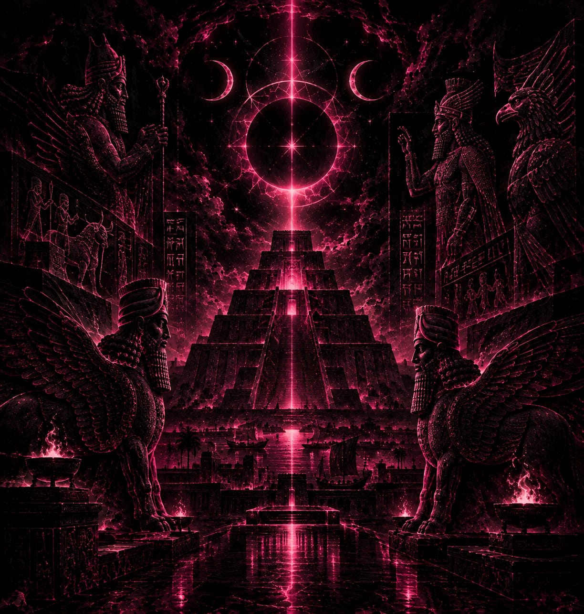

ANU
Dios del cielo y una de las máximas autoridades del universo divino. Su figura representaba la soberanía celeste y el poder situado por encima de los demás dioses.
CODEX UMBRA · ARCHIVO DE CIVILIZACIONES
Entre los ríos Tigris y Éufrates surgieron algunas de las primeras grandes civilizaciones de la humanidad. Un mundo de dioses poderosos, templos monumentales, antiguos rituales y relatos sobre la creación, la muerte y el destino de los seres humanos.

ARCHIVO HISTÓRICO · MESOPOTAMIA
Entre dos grandes ríos surgieron ciudades, imperios y tradiciones religiosas que transformaron la historia de la humanidad.
Mesopotamia significa literalmente "tierra entre ríos". Esta región histórica se desarrolló principalmente entre los ríos Tigris y Éufrates, en el territorio del actual Irak y zonas cercanas.
La disponibilidad de agua y el desarrollo de sistemas de irrigación favorecieron el crecimiento agrícola, el comercio y el establecimiento de comunidades cada vez más complejas.
Durante el cuarto milenio antes de nuestra era, el sur de Mesopotamia experimentó un importante crecimiento urbano. Surgieron ciudades como Uruk, Ur, Eridu y Lagash.
Los sumerios desarrollaron instituciones religiosas, sistemas administrativos y una de las primeras formas conocidas de escritura: la escritura cuneiforme, realizada sobre tablillas de arcilla.
Hacia el siglo XXIV a. C., Sargón de Acad estableció un poder político que unificó numerosos territorios mesopotámicos.
El Imperio acadio extendió su influencia política y cultural, contribuyendo a la difusión de tradiciones religiosas, lingüísticas y administrativas.
Babilonia se convirtió en uno de los centros políticos y culturales más importantes de Mesopotamia. Durante el reinado de Hammurabi, en el siglo XVIII a. C., alcanzó gran relevancia política.
Su tradición religiosa destacó por la importancia de Marduk, divinidad que adquirió una posición central en el panteón babilónico.
Los asirios desarrollaron un poderoso estado en el norte de Mesopotamia. Sus principales centros incluyeron ciudades como Asur, Nimrud y Nínive.
El Imperio neoasirio alcanzó una extraordinaria expansión territorial durante los siglos IX al VII a. C. También destacó por sus palacios, relieves monumentales y bibliotecas.
La religión mesopotámica era politeísta. Sus habitantes concebían el universo como un espacio gobernado por múltiples divinidades relacionadas con el cielo, la tierra, las aguas y las fuerzas de la naturaleza.
Entre sus principales figuras estaban Anu, Enlil, Enki, Inanna, Utu y Marduk. Sus atributos y posiciones cambiaron según la ciudad, el periodo histórico y la tradición religiosa.
Las tablillas cuneiformes conservaron mitos, himnos, registros comerciales, leyes, observaciones astronómicas y relatos literarios.
Entre las obras más conocidas se encuentra la Epopeya de Gilgamesh, un relato que explora la amistad, la mortalidad, la pérdida y la búsqueda de la eternidad.
EL PANTEÓN MESOPOTÁMICO
Los dioses mesopotámicos representaban las fuerzas de la naturaleza, el orden del universo, la justicia, la fertilidad y los misterios de la existencia.
Dios del cielo y una de las máximas autoridades del universo divino. Su figura representaba la soberanía celeste y el poder situado por encima de los demás dioses.
Dios relacionado con el aire, los vientos y la autoridad. En distintas tradiciones fue considerado una divinidad capaz de determinar el destino de los seres humanos.
Dios de las aguas dulces subterráneas, la sabiduría y las artes del conocimiento. Se relacionaba con la creación, la inteligencia y la protección de la humanidad.
Poderosa diosa asociada con el amor, la fertilidad, la sexualidad y la guerra. Su naturaleza reunía fuerzas aparentemente opuestas: creación, deseo y destrucción.
Dios del Sol y de la justicia. Su luz simbolizaba la verdad, la claridad y la capacidad de revelar aquello que permanecía oculto.
Dios de la Luna, relacionado con los ciclos del tiempo, la noche y la medición de los meses. Su presencia tenía especial importancia en la ciudad de Ur.
Dios protector de Babilonia, cuya importancia creció junto con el poder de la ciudad. En la tradición babilónica fue elevado a una posición dominante y protagonista del relato de creación Enuma Elish.
Reina del inframundo y soberana del reino de los muertos. Su figura aparece especialmente en el relato del descenso de Inanna, donde representa la autoridad sobre el mundo subterráneo.
Las divinidades mesopotámicas no tuvieron atributos ni jerarquías completamente fijos. Sus funciones y su importancia variaron entre las distintas ciudades y periodos históricos.
BIBLIOTECA DEL CODEX
Una selección de investigaciones, archivos y recursos académicos para profundizar en las civilizaciones y las creencias de la antigua Mesopotamia.
The Metropolitan Museum of Art. Estudio sobre las divinidades, sus representaciones, atributos y el papel de la religión en Mesopotamia.
CONSULTAR FUENTEORACC – University of Pennsylvania. Recurso especializado que reúne información sobre numerosas divinidades mesopotámicas.
CONSULTAR FUENTEORACC. Introducción a los principales periodos históricos, ciudades y transformaciones políticas de Mesopotamia.
CONSULTAR FUENTEGetty Museum. Colección educativa sobre el desarrollo de las primeras ciudades, la escritura, el arte y la religión.
CONSULTAR FUENTEThe Metropolitan Museum of Art. Investigación sobre la magia, los rituales y su relación con la religión en el mundo mesopotámico.
CONSULTAR FUENTE